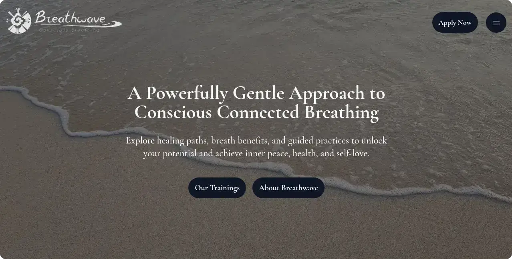
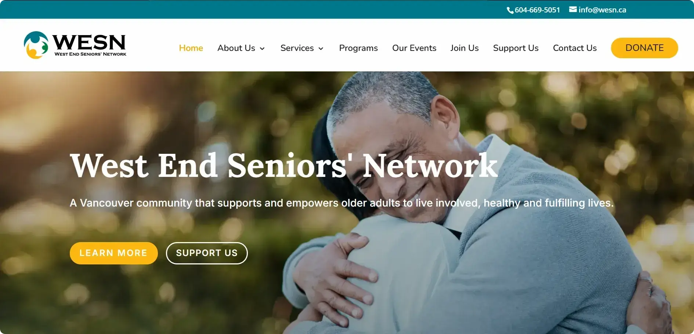
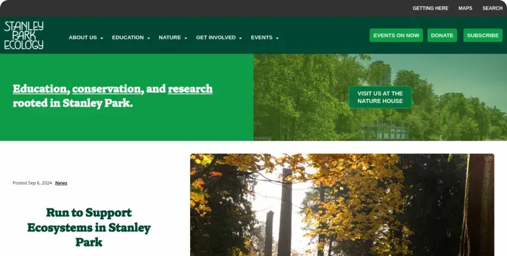
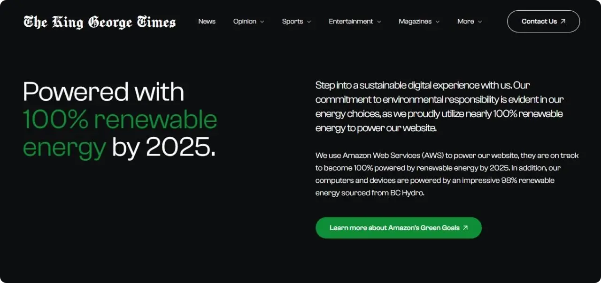
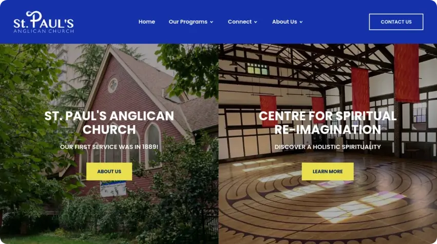
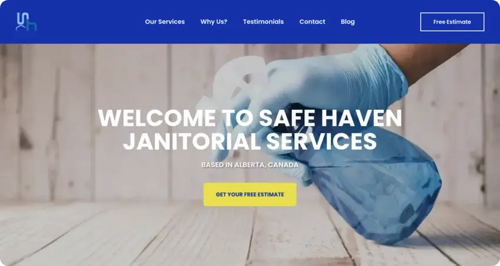
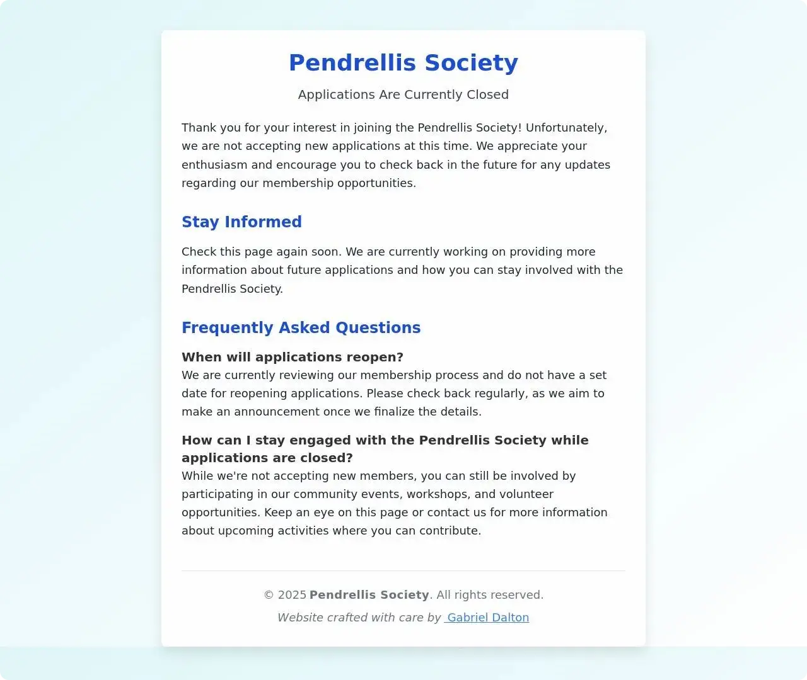

Selected work, in order of care.
Eleven projects across web development, nonprofit grant work, web design, and brand identity. Each one shipped lighter, more accessible, or more sustainable than what came before.
-
 № 01 Web Development · Nonprofit Grants Feb 2025 → Present
№ 01 Web Development · Nonprofit Grants Feb 2025 → PresentDenman Place Mall
Leading the website redevelopment for Vancouver's #1 service mall. Helping the organization secure ≈$330,000 in in-kind nonprofit grants from Google, TechSoup, Canva, and Microsoft. Also optimizing their Google Business Profile with new professional photography.
~$330kIn-kind grants№ 1Service mall in Vancouver -

№ 02 Web Development Dec 2023 → PresentBreathwave
An online home for Breathwave that runs on sustainable energy. After launch, the site attracted as many unique visitors in one month as the previous one had in a full year.
"Gabriel's expertise and responsive service significantly elevated our site, showcasing his exceptional talent and dedication to professional excellence." — Robin Clements, Founder
100%Sustainable energy94/100Accessibility -

№ 03 Nonprofit Grants Oct 2024 → PresentWest End Seniors' Network
Implemented a digital accessibility plan, securing ≈$7,000 through the Government of Canada's Enabling Accessibility Fund. Approved as a Youth Accessibility Leader by Employment and Social Development Canada.
~$7kAccessibility grantYALYouth Accessibility Leader -

№ 04 Web Design Jan 2024 → PresentStanley Park Ecology Society
Sustainable web practices to increase performance, reduce environmental impact, and enhance UX — page audits, image fixes, backend optimization, access management. 225+ trees planted in 4 countries through this engagement.
"Gabriel is incredibly enthusiastic, self-directed and capable. I have no doubt he will go on to do great things." — Tricia Collingham, Former Executive Director
225+Trees planted, 4 countries2SPES sites supported -
 № 05 Logo Design Apr 2024
№ 05 Logo Design Apr 2024Pure Land Consulting
A modern, versatile mark with a full file suite (SVG, PNG, JPG, GIF, PDF) for digital and print — ready to scale across every surface.
"Gabriel was super helpful and professional throughout the process. Communication was clear, timely, and friendly. I definitely recommend his logo services!" — Paul Wolfe, Founder
-
 № 06 Web Development · Logo Design Feb 2025
№ 06 Web Development · Logo Design Feb 2025Rose Healing
Developed a complete digital presence for Rose Healing, a holistic healing practice in Vancouver — an elegant, healing-focused logo plus a full website showcasing Reiki, Bio-Energy Healing, and Emotional Freedom Technique services with booking functionality.
-
 № 07 Logo Design Oct 2024
№ 07 Logo Design Oct 2024Olach
The official logo for Olach, a privacy-first note-taking application. A modern wordmark paired with an abstract emblem representing secure data movement and trust. Multiple variations — horizontal, stacked, favicon — for cross-platform consistency.
#0D1F52Primary blue · trust & security5+Export formats delivered -

№ 08 Web Development Aug 2023 → Aug 2024The King George Times
Helped a student newspaper move beyond print. The site received 3,000+ views after launch, giving students a new platform for their stories — built with sustainable web practices throughout.
"Gabriel transforms visions into stunning, sustainable websites with unmatched professionalism and efficiency." — Anisa Abduhamedova, Editor-in-Chief
100/100Lighthouse SEO79%More efficient -

№ 09 Web Development Jun 2024St. Paul's Anglican Church
A fast, sustainable, easy-to-navigate website for the parish — cutting hosting costs by ≈90% while improving performance, accessibility, and engagement tools (events, donations, community).
"Gabriel brought our new website to life with creativity and technical skill. He was proactive, detail-oriented, and a real asset to our team." — Revd. Philip Cochrane, Rector
83%CO₂ reduction100/100Best practices -

№ 10 Web Development May 2024Safe Haven Services
A sleek, fast-loading website that drew 610 unique visitors within sixty days of launch. Modern design, easy navigation, and optimized performance for desktop and mobile.
"Gabriel exceeded my expectations by quickly launching a high-speed website and setting up a complimentary business email and Google Business page. Highly recommendable." — Michael Ocampo, Owner
100/100SEO + a11y87%More efficient -

№ 11 Web Development · Nonprofit Grants Oct 2024 → PresentPendrellis Society
Improving digital operations for the Pendrellis, a 12-story low-income senior residence — on-site tech support during post-flood elevator outages, securing a Google Workspace for Nonprofits grant, and developing a website upgrade to streamline new-tenant applications.
Up to $30kAnnual Workspace grant~90Senior residents served
Have a project worth working on?
I take on a small number of nonprofit, founder-led, and policy-adjacent engagements each year. If you're building something thoughtful, write me.